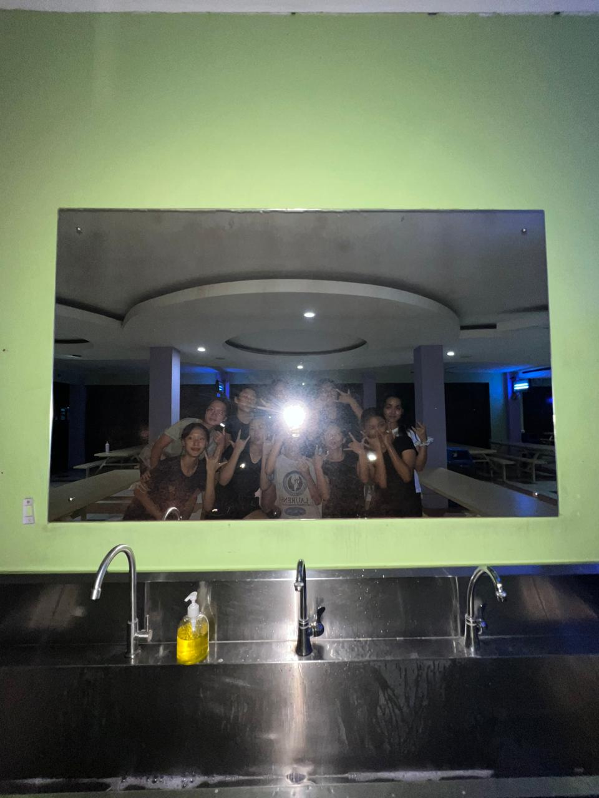
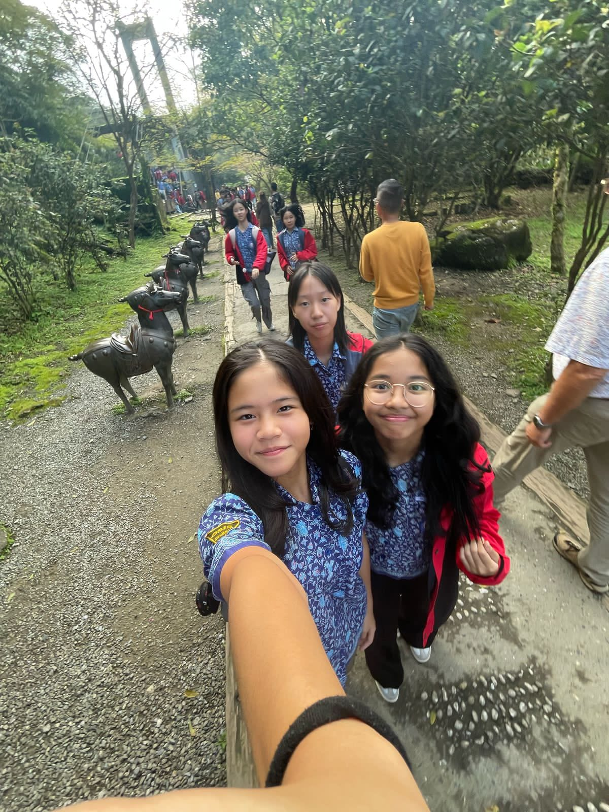

Kathleen Novella Halim
Born: November 15, 2010
Profession: Student, SMP Santa Laurensia
Get to know me
Hi, I am Kathleen from SMP Santa Laurensia. I am 14 years old and I live with family: dad, mom, and little brother. I love to play volleyball with my friends as it always made my day. I also love playing the piano and making art, especially for my parents. It helps me to focus better and allowed me to be creative.



School
In school, I learn many new things everyday. It is always interesting to listen to the teacher talking about the coordination system or even statistics. Although it may seem confusing at first, it will be easier if you keep on practing. If you're wondering, here are some of the lessons I learn in school:
- Math - Statistics
- Biology - Coordination system
- ICT - Coding
- PE - Badminton
- Physics - Lenses